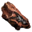

Диллег
Открыть в интерактивной вики →
Описание
Ты можешь переработать кое-что для меня?
Мне нужны камни. [Треб. ур. 40]
Происходит здесь чего интересного. [Треб. ур. 44]
Добыть 1х Молодой сабельтиг и получить 150х
Молодой сабельтиг и получить 150х  Камень. [Откат 60мин.]
Камень. [Откат 60мин.]
А так в принципе, то кто ты вообще такой?. [Треб. ур. 55]
Мне нужны камни. [Треб. ур. 40]
Происходит здесь чего интересного. [Треб. ур. 44]
Добыть 1х
Молодой сабельтиг и получить 150х Камень. [Откат 60мин.] А так в принципе, то кто ты вообще такой?. [Треб. ур. 55]
- Переработка:
- 10x
 Пни
Пни  5x
5x  Доски
Доски - 10x
 Полевой шпат 5x Камень
Полевой шпат 5x Камень - 2x

Железная руда 1x  Железо
Железо - 1x
 Арагонит 6x
Арагонит 6x  Кристаллы
Кристаллы - 1x
 Труп вендиго 200x
Труп вендиго 200x  Еда
Еда